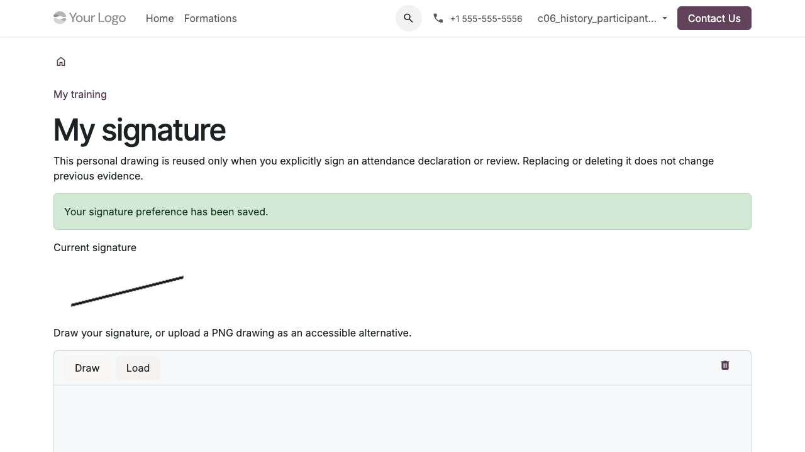
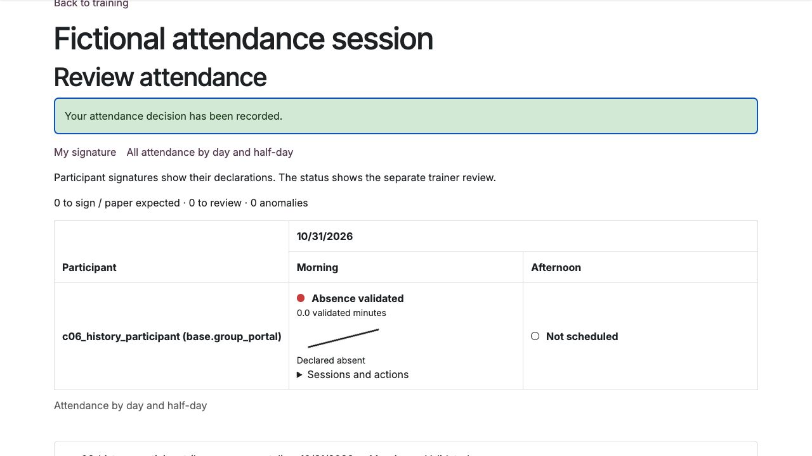

Déclarer et contrôler les présences
L’émargement se fait par demi-journée, à partir des séances prévues. Une déclaration électronique et sa validation par le formateur sont deux étapes distinctes. Le papier reste possible selon le mode de collecte configuré.
Préparer la collecte
Le coordinateur règle sur la séance le mode papier, électronique ou mixte et le texte de confirmation. Vérifier participants, horaires et durée du planning avant la collecte : une présence validée retient cette durée prévue, une absence zéro. L’asynchrone reste suivi par ses activités, sans création de séances fictives.
Enregistrer sa signature personnelle
Depuis Mes formations, ouvrir Ma signature ; ce lien est aussi disponible dans le contrôle des présences du formateur.
Dessiner sa signature ou charger un dessin PNG comme alternative accessible.
Cocher l’accord personnel puis enregistrer.
Chaque personne utilise sa propre signature. Elle est réutilisée seulement après une confirmation explicite pour chaque déclaration ou contrôle. Enregistrer le dessin ne signe aucune demi-journée automatiquement.
Remplacer ou supprimer le dessin ne modifie pas les preuves déjà signées. Recharger les formulaires ouverts avant ce changement. Les anciennes présences et pièces papier ne reçoivent aucune signature inventée lors de la mise à jour.


Ma signature ; capture en anglais sur un compte de test fictif.
Lire le tableau des présences
Le participant voit une ligne par jour et deux colonnes matin / après-midi. Dans le suivi d’une réalisation, le tableau collectif présente les participants par ligne et les demi-journées par date. Ses filtres jour, semaine ou tous les jours limitent aussi les compteurs affichés. Le contrôle par séance conserve ses actions et un lien vers le tableau collectif.
Pastille |
Signification |
|---|---|
Verte |
Présence validée par le formateur. |
Orange |
Déclaration en attente, validation partielle x/y, ou présence mixte après contrôle de toutes les séances. Lire le libellé et le détail. |
Rouge |
Absence validée, déclaration invalidée ou anomalie ; le libellé distingue ces cas. |
Grise |
Demi-journée à venir, à signer ou papier attendu. |
Contour vide |
Aucune séance planifiée. |
La signature de l’apprenant apparaît dès sa déclaration active, avant contrôle formateur. Elle ne prouve pas la validation finale. La cellule distingue présent et absent déclarés, et affiche les minutes validées. Développer les séances et actions pour retrouver horaires, fuseaux et historique. Les anciens intervalles restent accessibles séparément.
Sur petit écran, faire défiler le tableau horizontalement. Au clavier, placer le focus sur la zone de défilement puis utiliser les flèches.
Déclarer sa présence comme participant
Ouvrir Mes formations, choisir la formation, puis Mes présences.
Repérer la demi-journée écoulée, développer ses séances et actions, puis ouvrir la déclaration et vérifier date, horaires et fuseau.
Choisir présent ou absent, lire et accepter le texte affiché.
Cliquer sur Signer cette demi-journée, puis vérifier dessin, statut et date de déclaration.
Les demi-journées futures ou étrangères à la séance sont refusées. La régularisation après séance reste possible sans délai arbitraire, avant clôture et avec des accès encore valides ; elle conserve la vraie date de déclaration. Un accès expiré, suspendu ou révoqué n’est pas rouvert pour cette opération.
Si le planning ou le texte a changé depuis l’ouverture du formulaire, recharger, relire et confirmer les nouvelles informations. La déclaration ne doit pas être antidatée. Un lien collectif n’autorise pas à émarger pour une autre personne.
Valider comme formateur
Depuis sa séance affectée, ouvrir Contrôler les présences.
Vérifier la personne, la demi-journée et la déclaration reçue.
Choisir la décision et renseigner le commentaire requis en cas d’anomalie.
Accepter le texte et cliquer sur Signer et valider, puis vérifier les minutes retenues et l’historique.
Le formateur peut constater une absence sans déclaration. Il ne valide pas sa propre présence ni une déclaration qu’il a lui-même créée. En cas d’erreur de saisie, les valeurs du formulaire concerné restent disponibles pour correction.
Le superviseur consulte les réalisations affectées sans recevoir d’action de validation par ce rôle. Le formateur ne contrôle que ses séances affectées. Constater une absence sans déclaration ne fabrique aucune signature de l’apprenant.


Absence signée puis contrôlée séparément ; capture en anglais sur des données fictives.
Importer un papier et corriger une erreur
Le coordinateur utilise l’import depuis la séance, indique personne, demi-journée et provenance, puis dépose le papier signé. Le dépôt attend le contrôle du formateur. Une feuille collective reste réservée aux coordinateurs autorisés ; elle n’est pas diffusée aux autres participants ou au client.
Pour une déclaration erronée, le formateur affecté ou un coordinateur habilité peut l’invalider avec motif. Les minutes deviennent nulles sans suppression de la déclaration ou des pièces. Une nouvelle déclaration, puis un contrôle distinct, permettent de régulariser.
Une correction exige motif et justificatif. Elle conserve l’avant/après, l’auteur et la date réelle. Les sources ne s’additionnent jamais : papier et électronique pour la même personne et demi-journée ne doublent pas la durée. La dernière validation, correction ou invalidation fait autorité.
Exemple
Une demi-journée comporte 120 minutes prévues. La déclaration seule retient zéro minute validée. Après contrôle d’une présence : 120 minutes. Un dépôt papier complémentaire ne porte pas le total à 240. Une invalidation le ramène à zéro jusqu’à la nouvelle régularisation contrôlée.
La clôture bloque déclaration, validation et invalidation. Une correction ultérieure ne réécrit jamais les attestations déjà émises : suivre le circuit de rectification et remplacement dans Constituer le dossier, délivrer et vérifier les attestations. Ce dispositif est une déclaration et un contrôle internes ; il ne revendique aucune qualification ou certification juridique de la signature.